My idea is to create a beat'em up-ish game. The player only having access to melee attacks, in fact only his fists and legs. Essentially a martial arts game. So no bullshit throwables or stuff like that.
A collection of reference art from all over the internet.
Some monk pixel art references. Though I think you know what I am thinking.
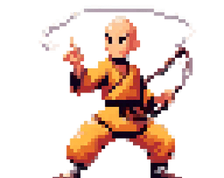
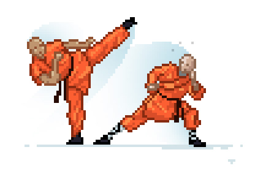
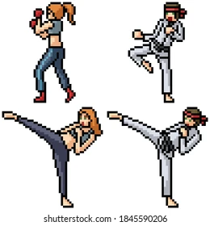
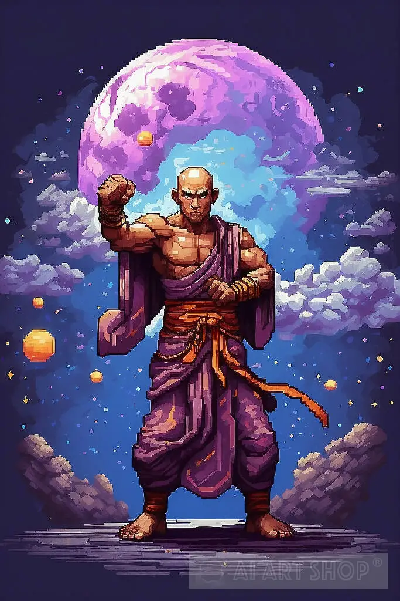
This is also a pretty cool style, though I will let you come up with the specifics. This is all just to get your brain juices flowing.
Yeah no clue, too lazy to look up some references right now, not really important right now anyways.
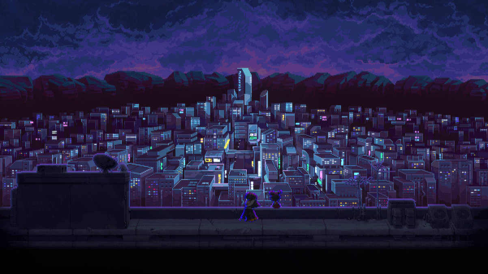
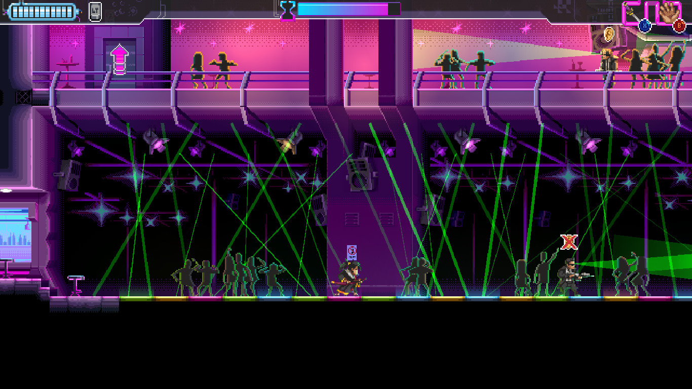
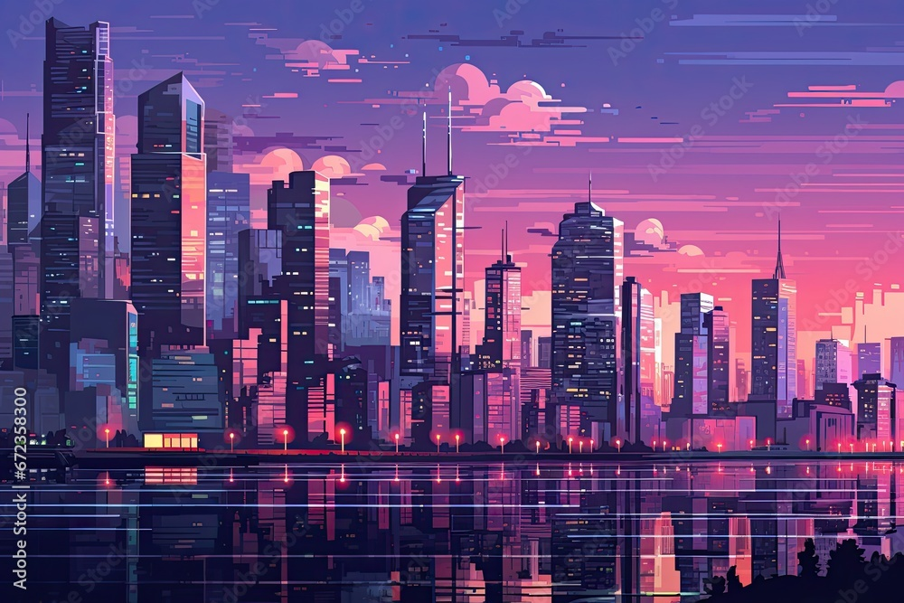
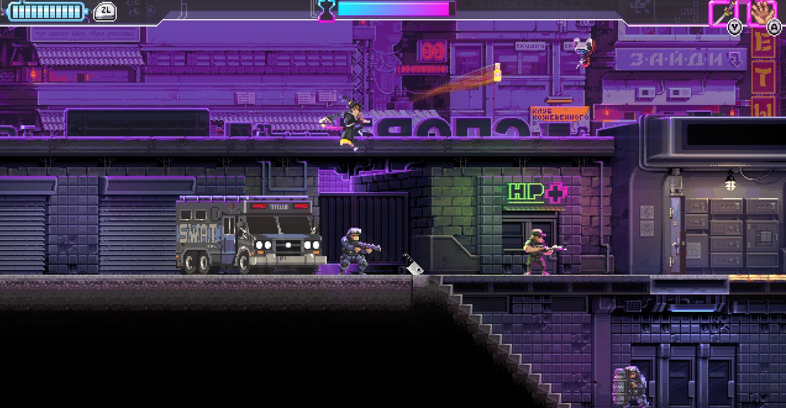
Some really bad references: Bro... what is this, kindergarden?, Not as ass as the one before, but still quite shitty, Lol
Some more nice references: Scrolling city background, Power station tileset, Modern City Background
The game wouldn't need terribly much in terms of visuals:
Something like a Sifu but in 2D probably comes very close to it. Though I would want to focus less on combos and more on just fluidity of the fights.
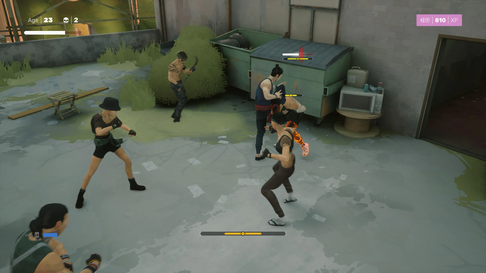
That's kinda it. Now the big challenge is with the player and enemies. As I would like to have a bunch of combos, there would need to be a huge amount of animations. I actually think it should be doable to make them, as you could trace real life fighting moves, heck you could even record your own and trace those into pixel art. Though that only makes this a little easier. It would still be a lot of work, though the coding side of things would also be fairly complicated as there would be a fair share of state and the enemy AI would be pretty advanced.
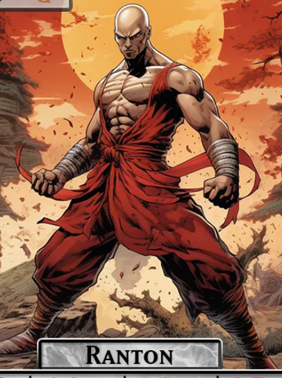
I would really like to finish this within a year. I think it would be possible considering my past experience. I would estimate that the coding stuff would take me about 400-500 hours, which is possible to dedicate within a year. As for the sprites etc. it would suffice to create a basic player spritesheet with a limited number of animations (same with enemy) and to use some existing assets for the map. So it would be fairly doable to create an MVP considering the art.
The base idea is inspired by Ranton, not sure how exactly it came to be but I just thought it would be funny to play as a bold monk bro that beats the shit out of others. I also really wanted a game were I can put on some breakcore and just demolish stuff while vibing to the music. The game is supposed to be pretty fast paced with barely any breaks inbetween the macro gameplay but with rests inbetween the macro gameplay.
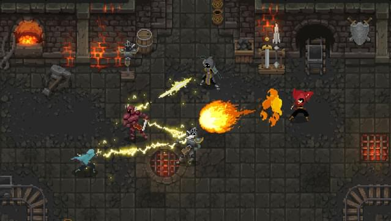
It would of course be pixel art, similar to the style of wizards of legends. So a top-down birds-perspective with 2D movement. The gameplay would be similar to that game as well, just with exclusive melee and probably a bit more combos. And of course no magic :(
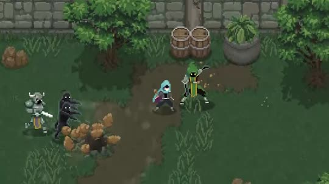
While I didn't play the game Midnight Fight Express yet, I would assume that I want to make a game along those lines in terms of gameplay (based on what I have seen).
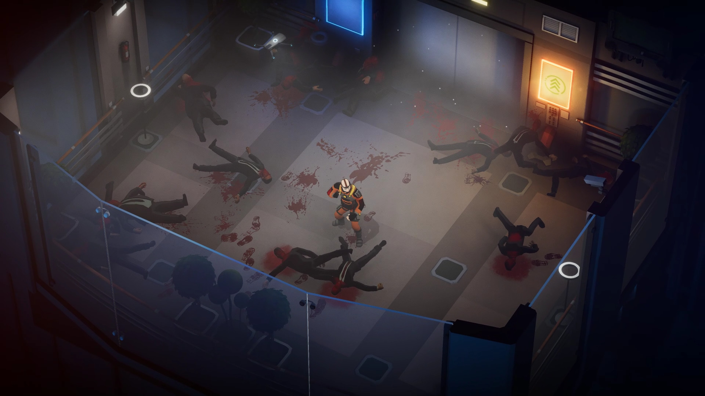
I also played a couple beat'em ups but they are also kinda shit, they have a weird 2.5D gameplay which I dislike and they also have super rigid movement/attacks were you players stops moving when you attack which is exactly the opposite to what I want to create.
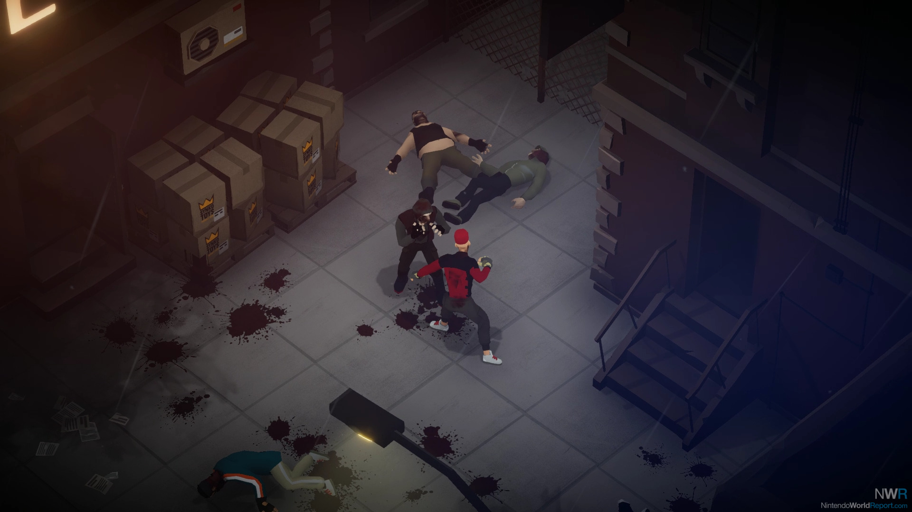
I honestly don't think the game would perform super well in terms of sales. If it would make back the 100 bucks that steam takes initially that would be pretty sick. But the goal isn't really to make money with this, rather to just get to know what it takes to make a steam game and also to get familiar with the general process of publishing a game to steam.
Based on my market research this type of game wouldn't perform too hot, as beat'em ups and action games are generally harder to sell. Though if the game would be turned into a rouge-lite then it's very different. Those sell extremely well. It wouldn't be easy to change game genres, though once the game is finishe (or even the MVP), then you could always experiment from there. But again, I don't plan to make this game for money. It's a learning experience. And a year of side-project work is also not a huge cost, though you are exposed to a possible positive black swan, as the game could take off all of a sudden for no apparent reason. Though I don't bank on it.
Oh yeah I would of course do a 50-50 split of the revenue.
So yeah, there you go. I currently only have a super super super basic demo (prototype) in the works, I will most likely have something more concrete within a month or so. Currently working on finally finishing Lost Oppai.